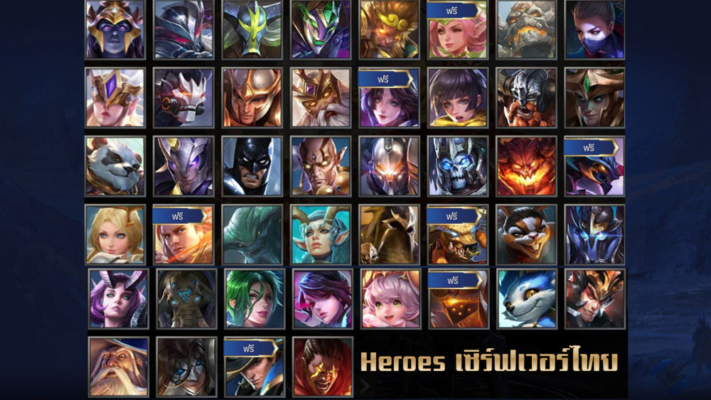

หน้าหลัก
ตัวละคร
ตำแหน่ง
ไอเทม

ตัวละครในเกม ROV (Arena of Valor) มีตัวละครมากมายที่มีเอกลักษณ์และคำพูดที่น่าสนใจ ตัวละครแต่ละตัวจะมีบทบาทและเรื่องราวที่แตกต่างกันไป ทำให้พวกเขามีคำพูดที่สื่อถึงบุคลิกและบทบาทของตนเองได้เป็นอย่างดี นี่คือตัวอย่างตัวละคร ROV ที่มีคำพูดที่เป็นเอกลักษณ์: Lublu: เป็นตัวละครที่ในการแข่งที่ผ่านมามีการนำไปอยู่ใน Dark Slayer Lane และมีรูปแบบใหม่ที่นำไปเป็น Jungle และค่อนข้างน่ากลัวทีเดียว Maloch: เป็น Tank ที่เป็น Fighter ที่มีประสิทธิภาพด้วยมีพลังการปาดที่รุนแรงแบบ True DMG และมีสกิล Ultimate ที่อยู่ในระดับกว้างมาก Erin: ตัวละครใหม่ล่าสุดของ ROV ซึ่งมีการปรับสมดุลมา ทำให้แพทซ์นี้เป็นเมต้า ซึ่ง Erin จะเล่นได้ทั้งสายพลังเวทย์ ที่ใช้สกิล 1 ไว้โซนได้ดีมาก และกายภาพ ที่ตีแรงสุดๆ ขึ้นอยู่กับสถานะการณ์ของแต่ละเกมส์ นอกจากนี้ ยังมีตัวละครอื่นๆ อีกมากมายที่มีคำพูดที่เป็นเอกลักษณ์ เช่น: แวน-บัตเตอร์ฟลาย: "จูนีซูปาปาโว, จูนีซัวพาพาวัว" วีร่า-นาตายา: "ซูมีร่า ทันนังทัดชอรีน, เดอะฟู่หน่า" คำพูดเหล่านี้อาจเป็นภาษาที่ตัวละครใช้ในการร่ายเวทมนตร์ หรือเป็นคำพูดที่สื่อถึงบุคลิกและเรื่องราวของตัวละครนั้นๆ หากคุณสนใจคำพูดของตัวละคร ROV ตัวใดเป็นพิเศษ คุณสามารถค้นหาข้อมูลเพิ่มเติมได้จากแหล่งต่างๆ เช่น: เว็บไซต์และช่อง YouTube ที่เกี่ยวข้องกับเกม ROV แพลตฟอร์มโซเชียลมีเดีย เช่น TikTok ที่มีการรวบรวมคำพูดของตัวละคร ROV
เบอร์โทรศัพท์ :0962928640
.png)